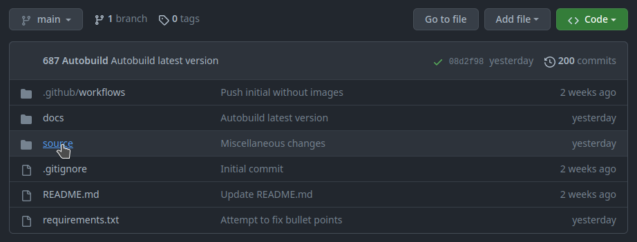
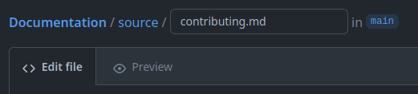

Contributing
Under Construction
This page is currently under construction. Please return later for more information.
Editing a page
First, open the github repository in a web browser.
Your account must be a part of the nerdherd Github organization in order to edit the repository. To be invited, please contact a programming subteam member.

Checking your login on the top right of the page
Then, click on the source folder to see the markdown files for each page.

The source folder
Editing pages
To edit a page, find its corresponding markdown (.md) file and click on the edit button to start editing.

Finding the markdown file

Entering edit mode

The editor interface
You can click on Preview to see a sample version of your document.
Basic Syntax
For a full guide on markdown, see the MyST Parser documentation.
Headings
Pages should always start with an h1 heading, which is created with:
# Heading name
Subheadings can be made by adding more hashes:
## Subheading name
### Smaller subheading name
#### Even smaller subheading name
Try to avoid skipping more than one heading level at a time.
Text formatting
To bold text, do:
**text to bold**
To italicize text, do:
*text to italicize*
Please italicize image captions.
To bold and italicize text, do:
***text to bold and italicize***
Code Blocks
To format text as monospace (code, filenames, etc.) do:
`code text`
To format an entire section as code, do:
```language name
```
If you want the code to be highlighted, replace language name with the language name.
For example, this code block
```java
System.out.println("Hello world!");
```
outputs
System.out.println("Hello world!");
Adding links
To add a link as text, follow this syntax:
[Link text](https://website-name.com)
To add a link directly, do:
<https://website-name.com>
Adding Images
To add an image, first upload an image in the /source/images directory.
Then, to embed the image in a document, add:

*Add a caption here*
or
```{image} ./images/IMAGE_NAME
```
*Add a caption here*
You can change the image’s size and other properties by doing:
```{image} ./images/IMAGE_NAME
:alt: ALTERNATE IMAGE TEXT
:width: 200px
:align: left
```
For more information, see the MyST Parser documentation.
Saving Changes
To save your changes, scroll to the bottom of the editor, write notes, and press “Commit changes.”
If someone worked on the page with you, add them as a co-author by adding to the commit message:
Co-authored-by: AUTHORNAME <USERNAME@users.noreply.github.com>
For example, to add Zachary Miller as a co-author, add:
Co-authored-by: Zach M <londonwafflez@users.noreply.github.com>

After a few seconds, your changes will be built and displayed here on the website.
Adding New Pages
To add a new page, create a markdown file for it in the source folder.
Then, add it to the table of contents in index.rst for it to appear on the website.
.. toctree::
:maxdepth: 1
:caption: About:
PAGE NAME <./PAGE_FILE.md>
PAGE 2 NAME <./PAGE_2_FILE.md>
Make sure that there is an empty line between the :caption: line and the first page name.
You can add additional toctrees to add more sections on the sidebar.